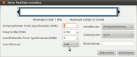

Alignment
Dieser Artikel wurde für die folgenden Ubuntu-Versionen getestet:
Ubuntu 14.04 Trusty Tahr
Zum Verständnis dieses Artikels sind folgende Seiten hilfreich:
Hinweis:
Dieser Artikel ist Teil der Artikelserie SSD, die das Thema Solid State Drives behandelt.
Dieser Artikel geht in allen Beschreibungen davon aus, dass das SSD als /dev/sda im System eingebunden ist. Die Befehle müssen bei davon abweichenden Systemen daher gegebenenfalls angepasst werden.
 Bei der Partitionierung bringt ein korrektes Ausrichten („Alignment“) der Partitionen respektive der Dateisysteme deutliche Performance-Vorteile. Diese Maßnahme bringt den mit Abstand größten Geschwindigkeitszuwachs und sollte in jedem Falle durchgeführt werden.
Bei der Partitionierung bringt ein korrektes Ausrichten („Alignment“) der Partitionen respektive der Dateisysteme deutliche Performance-Vorteile. Diese Maßnahme bringt den mit Abstand größten Geschwindigkeitszuwachs und sollte in jedem Falle durchgeführt werden.
Ein nicht optimales Partitionsalignment kann dazu führen, dass sich ein 4.096 Byte großer Dateisystemblock über zwei 4.096 Byte große SSD-Pages (siehe Artikel Aufbau der SSD) erstreckt. Achtet man beim Partitionieren auf diese Besonderheiten, kann man Performance-Engpässe sehr einfach vermeiden. Weitere Informationen zum „Partition Alignment“ kann man auf der Wiki-Seite von Thomas Krenn  finden.
finden.
Experten-Info:
Es werden in diesem Artikel durchweg die binären Einheiten Kibibyte (KiB), Mebibyte (MiB) und Gibibyte (GiB) verwendet, welche sich jeweils um den Faktor 1024 (= 2 hoch 10) unterscheiden. Dies ist wesentlich für ein korrektes Alignment. Sie sind nicht zu verwechseln mit den Einheiten Kilobyte (kB), Megabyte (MB) und Gigabyte (GB), welche auf dem Dezimalsystem basieren und daher den Faktor 1000 benutzen (siehe auch Byte).
Zum Verständnis der Details ist zu beachten, dass bei der heute üblichen LBA-Adressierung von Blöcken (hier als Sektoren bezeichnet) auf der Festplatte die Zählung bei "0" beginnt. Der MBR hat also die Block-/Sektornummer "0"; das erste MiB einer Festplatte umfasst somit die Blöcke/Sektoren 0 - 2047.
Grundlagen¶
Wichtig für das korrekte Alignment des Dateisystems ist die korrekte Ausrichtung aller Partitionen einschließlich der logischen. Bei der erweiterten Partition ist es hingegen unerheblich, ob diese korrekt ausgerichtet wird, da diese nur als Rahmen für beliebig viele logische Partitionen oder Laufwerke dient (siehe Artikel Partitionierung/Grundlagen).
Die Installationsprogramme in unterstützten Ubuntu-Versionen bzw. aktuelle Versionen von gparted und fdisk/gdisk richten neu angelegte Partitionen automatisch an den für SSD wichtigen Mebibyte-Grenzen (MiB) aus.
Achtung!
Damit die eingerichtete Ausrichtung (Alignment) nicht durcheinander gerät oder gar der gesamte Speicherplatz als belegt markiert wird, sollte man Daten oder einzelne Partitionen nicht mit Anwendungen auf die SSD kopieren, die nur alle Sektoren kopieren. Dazu gehören neben Abbild- oder Partitionierungsprogrammen, die das verwendete Dateisystem nicht kennen, auch das Kommandozeilenwerkzeug dd.
Partitionieren mit GUI¶

Man kann bedenkenlos mit dem grafischen Installationsprogramm respektive mit GParted partitionieren, das von Haus aus mit SSD sowie neueren konventionellen Festplatten (laut c't 4/11 seit Anfang 2010) zurechtkommt. Diese nutzen die 4096 Byte („4K“) großen Sektoren, so dass die erste Partition (sowie alle folgenden) korrekt beim logischen Sektor 2048 beginnen. Beachten muss man jedoch, dass bei der Partitionierung im Feld "Ausrichten an" die Option MiB ausgewählt wird (siehe Bild rechts).
Partitionieren im Terminal¶
Zum Partitionieren kann man fdisk benutzen.
Die Änderungen an der Partitionstabelle werden erst auf die Festplatte geschrieben, wenn man die Option w benutzt. Abbrechen kann man die Partitionierung jederzeit, wenn man den Befehl q benutzt.
Man startet die Partitionierung durch folgenden Befehl in einem Terminal [1] mit Root-Rechten [2] :
sudo fdisk /dev/sda
Die Partitionierung selbst findet im Terminal statt. Die Ausgabe des obigen Befehls lautet etwa wie folgt:
Befehl (m für Hilfe):
An dieser Stelle empfiehlt es sich, die Taste M zu nutzen, welche eine Hilfe anzeigt. Die Tastenbelegungen sind wie folgt:
| Optionen von fdisk | |
| Parameter | Bedeutung |
| A | (De-)Aktivieren des bootfähig-Flags |
| B | „bsd disklabel“ bearbeiten |
| C | (De-)Aktivieren des DOS-Kompatibilitätsflags |
| D | Eine Partition löschen |
| L | Die bekannten Dateisystemtypen anzeigen |
| M | Hilfe anzeigen |
| N | Eine neue Partition anlegen |
| O | Eine neue leere DOS-Partitionstabelle anlegen |
| P | Die Partitionstabelle anzeigen |
| Q | Ende ohne Speichern der Änderungen |
| S | Einen neuen leeren „Sun disklabel“ anlegen |
| T | Den Dateisystemtyp einer Partition ändern |
| U | Die Einheit für die Anzeige/Eingabe ändern |
| V | Die Partitionstabelle überprüfen |
| W | Die Tabelle auf die Festplatte schreiben und das Programm beenden |
| X | Zusätzliche Funktionen (nur für Experten) |
Mit O wird eine neue leere DOS-Partitionstabelle angelegt. Dies ist bei unbenutzen SSDs sinnvoll oder wenn man alte, möglicherweise fehlerhafte DOS-Partitionstabellen neu schreiben will. Zudem werden so sämtliche Partitionen am schnellsten gelöscht.
Building a new DOS disklabel with disk identifier 0xb4ffa978. Changes will remain in memory only, until you decide to write them. After that, of course, the previous content won't be recoverable.
Anschließend gibt man P ein, um sich die Partionstabelle anzeigen zu lassen. Diesen Befehl kann und sollte man immer dann benutzen, wenn man mit Taste N eine neue Partition angelegt hat, um zu überprüfen, dass alles korrekt eingetragen worden ist. Dies sieht dann ungefähr wie folgt aus. (Die letzte Zeile ist noch leer, da noch keine Partition angelegt worden ist.)
Befehl (m für Hilfe): p Platte /dev/sda: 160.0 GByte, 160041885696 Byte 255 Köpfe, 63 Sektoren/Spur, 19457 Zylinder, zusammen 312581808 Sektoren Einheiten = Sektoren von 1 × 512 = 512 Bytes Sector size (logical/physical): 512 bytes / 512 bytes I/O size (minimum/optimal): 512 bytes / 512 bytes Disk identifier: 0xb4ffa978 Gerät boot. Anfang Ende Blöcke Id System
Mit dem Befehl N wird nun die erste Partition angelegt. Man muss sich entscheiden, ob man eine erweiterte oder eine primäre Partition anlegen möchte (siehe Artikel Partitionierung/Grundlagen).
Befehl (m für Hilfe): n
Befehl Aktion
e Erweiterte
p Primäre Partition (1-4)
p
Partitionsnummer (1-4): 1
Erster Sektor (2048-312581807, Vorgabe: 2048):
Benutze den Standardwert 2048
Last Sektor, +Sektoren or +size{K,M,G} (2048-312581807, Vorgabe: 312581807): +10GNachdem in diesem Beispiel mit
P eine primäre Partition und eine Partitionsnummer (in diesem Beispiel 1) ausgewählt worden ist, ist der Standardwert für den ersten Sektor anzugeben. Man kann per
⏎ den vorgegeben Wert „2048” auswählen. Abschließend wird man gefragt, welchen Wert der letzte Sektor haben soll. Im Beispiel ist +10G eingegeben worden, die Partition soll eine Kapazität von 10 GiB (Gibibyte) haben. An dieser Stelle kann man also entweder direkt die genaue Anzahl der Sektoren eintragen oder eine Größe mit den Befehlen +10k (10 Kibibyte), +50M (50 Mebibyte) oder +20G (20 Gibibyte) erstellen lassen (diese drei Zahlen fungieren nur als Beispiele – es ist jede andere Zahl möglich). Die korrekte Anzahl an Sektoren wird dabei automatisch vergeben.
Wie oben empfohlen, ist hier mit P die Partitionstabelle angezeigt worden. Wie man sieht, ist die eben erstellte 10-Gibibyte-Partition eingetragen worden.
Befehl (m für Hilfe): p Platte /dev/sda: 160.0 GByte, 160041885696 Byte 255 Köpfe, 63 Sektoren/Spur, 19457 Zylinder, zusammen 312581808 Sektoren Einheiten = Sektoren von 1 × 512 = 512 Bytes Sector size (logical/physical): 512 bytes / 512 bytes I/O size (minimum/optimal): 512 bytes / 512 bytes Disk identifier: 0xb4ffa978 Gerät boot. Anfang Ende Blöcke Id System /dev/sda1 2048 20973567 10485760 83 Linux
An dieser Stelle ist die Erstellung der zweiten Partition erfolgt. Wieder sind dazu die Befehle in der Reihenfolge N , P , 2 , ⏎ (vorgegebener Standardwert des ersten Sektors übernommen) und ⏎ (vorgegebener Standardwert des letzten Sektors übernommen) ausgeführt worden. Damit ist eine zweite Partition angelegt worden, welche den kompletten Rest der Festplatte einnimmt.
Befehl (m für Hilfe): n
Befehl Aktion
e Erweiterte
p Primäre Partition (1-4)
p
Partitionsnummer (1-4): 2
Erster Sektor (20973568-312581807, Vorgabe: 20973568):
Benutze den Standardwert 20973568
Last Sektor, +Sektoren or +size{K,M,G} (20973568-312581807, Vorgabe: 312581807):
Benutze den Standardwert 312581807Wieder folgt mit P eine Übersicht aller erstellten Partitionen (= Kontrolle). Die korrekten Startsektoren kann man mit Hilfe eines Taschenrechners überprüfen: Die Anfangssektoren müssen immer durch 2048 teilbar sein.
Befehl (m für Hilfe): p Platte /dev/sda: 160.0 GByte, 160041885696 Byte 255 Köpfe, 63 Sektoren/Spur, 19457 Zylinder, zusammen 312581808 Sektoren Einheiten = Sektoren von 1 × 512 = 512 Bytes Sector size (logical/physical): 512 bytes / 512 bytes I/O size (minimum/optimal): 512 bytes / 512 bytes Disk identifier: 0xb4ffa978 Gerät boot. Anfang Ende Blöcke Id System /dev/sda1 2048 20973567 10485760 83 Linux /dev/sda2 20973568 312581807 145804120 83 Linux
Ist man nun mit allem einverstanden, nutzt man W um die Partitionstabelle zu schreiben. Mit Q verwirft man alle Einträge und beendet das Programm.
Alignment überprüfen¶
Hinweis:
Es müssen nur primäre und logische Partitionen korrekt ausgerichtet sein. Erweiterte Partitionen sind nur Container und müssen nicht ausgerichtet werden.
Es gibt zwei Arten, das korrekte Alignment zu überprüfen. Beide werden in einem Terminal [1] mit Root-Rechten [2] ausgeführt.
fdisk¶
Man kann mit einem der beiden folgenden Kommandos das vorgenommene Alignment überprüfen:
sudo sfdisk -d /dev/sda
oder
sudo fdisk -l -u /dev/sda
Hinweis:
Die Meldung: "Partition X endet nicht an einer Zylindergrenze." kann man ignorieren. Diese sollte nur kommen, wenn man die Option -u vergessen hat.
Der Installer hat dabei die Partitionen auf 1 MiB (Mebibyte) ausgerichtet. Dies erkennt man daran, dass die Nummer des Startsektors der jeweiligen Partition durch 2048 teilbar ist (2048 Sektoren multipliziert mit 512 Byte pro Sektor = 1.048.576 Bytes = 1 Mebibyte, abgekürzt 1 MiB).
sudo sfdisk -d /dev/sda Warning: extended partition does not start at a cylinder boundary. DOS and Linux will interpret the contents differently. # partition table of /dev/sda unit: sectors /dev/sda1 : start= 2048, size= 10485760, Id=83, bootable /dev/sda2 : start= 20973568, size=145804120, Id=83
respektive
sudo fdisk -l -u /dev/sda Disk /dev/sda: 1000.2 GB, 1000204886016 bytes 255 heads, 63 sectors/track, 121601 cylinders, total 1953525168 sectors Units = sectors of 1 * 512 = 512 bytes Sector size (logical/physical): 512 bytes / 512 bytes I/O size (minimum/optimal): 512 bytes / 512 bytes Disk identifier: 0x000d8343 Device Boot Start End Blocks Id System /dev/sda1 * 2048 20973567 10485760 83 Linux /dev/sda2 20973568 312581807 145804120 83 Linux
parted¶
Um mit parted das Alignment zu überprüfen, nutzt man folgendes Kommando:
sudo parted /dev/sda align-check opt ## opt 1 würde die erste Partition testen, opt 2 die zweite…
Gibt man keine Partitionsnummer hinter opt ein, so wird man im Anschluss an den Befehl nach der Partitionsnummer gefragt, welche man eingibt und mit
⏎ bestätigten muss. Die Ausgabe sieht bei korrektem Alignment wie folgt aus:
sudo parted /dev/sda align-check opt Partitionsnummer? 1 1 aligned

- Erstellt mit Inyoka
-
 2004 – 2017 ubuntuusers.de • Einige Rechte vorbehalten
2004 – 2017 ubuntuusers.de • Einige Rechte vorbehalten
Lizenz • Kontakt • Datenschutz • Impressum • Serverstatus -
Serverhousing gespendet von